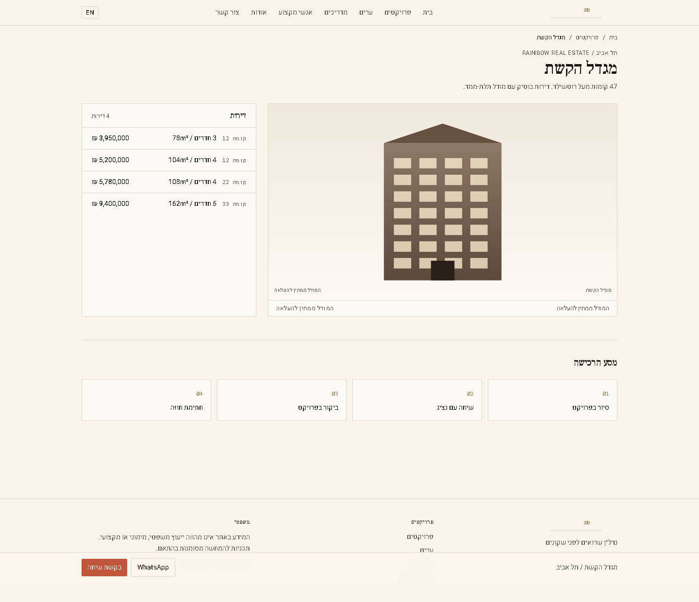
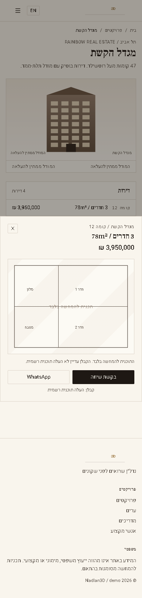

חבילת בנייה לשואורום שמוכר פרויקט, לא דמו.
המטרה היא להפוך את השואורום למוצר שאפשר להראות לקבלן ולמשקיע: נכסים אמיתיים, מסע בחירת דירה, נוף, תכנון, סיור פנים, פנייה מסודרת, ושפה ציבורית נקייה. מה שאין לו מקור מאושר מוצג כחסר או כקונספט, לא כעובדה.
מה ראינו בצילומים

עמוד חי, חיתוך עליון של צילום מלא: יש עומק, תוכן וטפסים, אבל אזור השואורום עדיין מרגיש כמו מודול כבד ולא כמו חוויית מכירה מדויקת.

אב הטיפוס נקי יותר מבחינת שפה, אבל החזית סכמטית והמותג חלש. זה טוב כהוכחת מבנה, לא כמשטח מכירה לקבלן.
החלטת מוצר
הקו המחייב
השואורום מציג רק אחד מארבעה מצבים ברורים: נכס רשמי, הדמיית קונספט מאושרת, מצב חסר נכסים, או מצב תקלה נקי. אין חזרה שקטה למגדל סכמטי, אין תמונות לא קשורות, ואין טענה שמידע הוא רשמי אם הוא לא.
הדמיה רשמית הדמיית קונספט ממתין להעלאה לא זמין כרגעמה לא עובר הלאה
לא מעבירים למסך ציבורי מונחי קבצים, שמות פונטים, שפת בנייה, תגיות דירוג פנימיות, או תמונות שנראות כמו מלאי כללי. אם אין תמונת פרויקט אמיתית, עדיף מצב חסר אלגנטי מאשר תמונה מטעה.
מסע השואורום החדש
מצבי הדירה במובייל

המבנה הנכון: בחירה פותחת גיליון תחתון קריא, אבל צריך להחליף את השרטוט הסכמטי בנכס אמיתי או בקונספט מאושר.
שער מובייל
ב־390px הבמה, כרטיס הדירה והפעולות חייבים להישאר בתוך רוחב המסך. אין כרטיס קבוע שמכסה את החזית. אין כפתור WhatsApp שמסתיר פוטר או טופס. כל יעד לחיצה לפחות 44px.
מסכי יעד לבנייה
| מסך | מה המשתמש רואה | מה חייב להיות מאחורי הקלעים | בדיקת צילום |
|---|---|---|---|
| מסך ראשון | פרויקט, יזם, מיקום, במה חזותית ופעולה אחת. | מקור פרויקט, נכס חזותי, סטטוס נכס, נתוני פנייה. | 1440 ו־390 לפני גלילה. |
| בחירת דירה | יחידות זמינות עם מחיר, שטח, חדרים, קומה וסטטוס. | טבלת יחידות מובנית, מקור מחיר, מקור זמינות, מיפוי חזותי. | דירה נבחרת פתוחה בדסקטופ ובמובייל. |
| נוף וסביבה | מפה או הסבר נקי שהמידע לא זמין. | טוקן מפה, קואורדינטות, כיוון דירה, נתוני סביבה. | מצב מפה פעילה ומצב מפה לא זמינה. |
| סיור פנים | תוכנית, סיור, תמונות או הצעת ייעוץ. | קבצי תוכנית, סיור, תמונות, סטטוס אישור. | טאב פתוח במובייל בלי גלישה. |
| פנייה | בקשת שיחה או WhatsApp כחלק מאותה חוויה. | מזהה פרויקט, מזהה דירה, שפה, מקור פנייה ומצב הנכס החזותי. | פוטר עם פעולה גלויה בלי כיסוי. |
חבילת נכסים לקבלן
חובה
לוגו יזם, שם פרויקט, עיר, מיקום, איש קשר, תמונת פרויקט או הדמיה רשמית, טבלת יחידות, סטטוס זמינות, מקור מחיר.
רצוי
מודל תלת ממד, חזית עם מיפוי דירות, תוכניות דירה, סיור פנים, כיוון נוף, תמונות סביבתיות, סרטון.
אסור להמציא
זמינות, מחיר, תמונת בניין, נוף מהדירה, סיור פנים, או שיוך דירה לחזית בלי מקור או אישור.
קישורי מקור למוצר
המקורות משמשים כנקודת ייחוס למבנה מוצר: סיור, תוכנית, חזית, סביבת נכס, שפה פרימיום ואמון בינלאומי. הם לא מקור לתמונות של פרויקטים ספציפיים.
בדיקת קבלה לכל שינוי
צילום
כל שינוי בשואורום חייב לשמור צילום 1440, 390, דירה נבחרת, מצב חסר נכס, מצב תקלה ופוטר עם CTA.
טקסט
סריקת טקסט מרונדר חייבת לאתר שפה פנימית, מונחי בנייה, תוויות דירוג פנימיות ומילים שלא אמורות להופיע ללקוח.
אמת נכסים
הצילום חייב להוכיח שהמסך לא מציג נכס כאמיתי בלי מקור. אם חסר נכס, זה חייב להיות ברור ונקי.